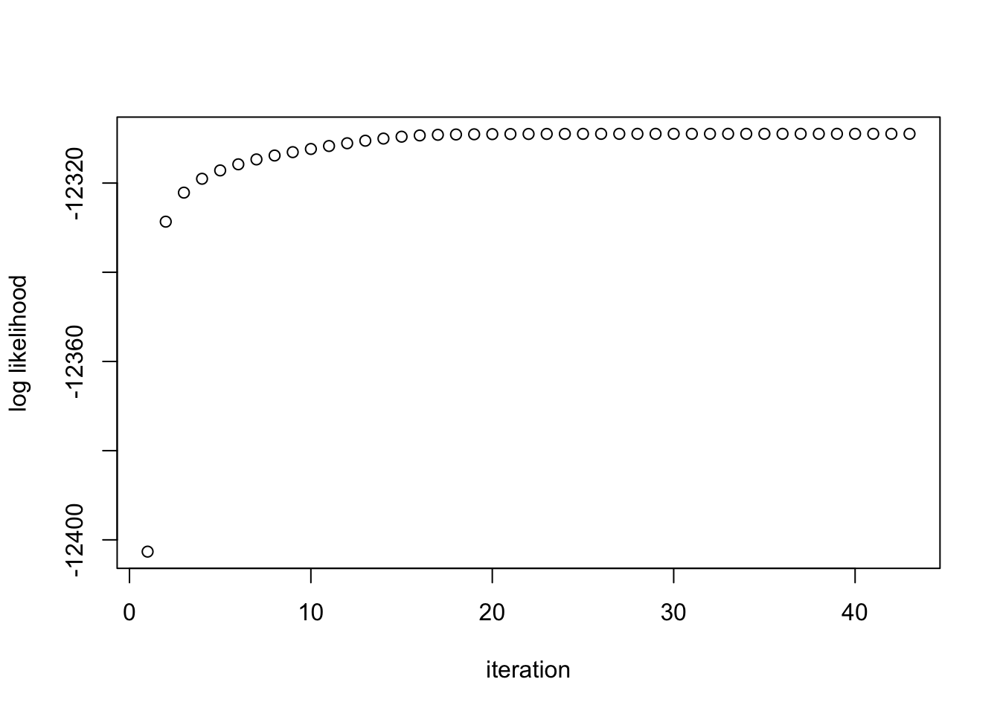

Last updated: 2020-12-21
Checks: 7 0
Knit directory: mash_application/analysis/
This reproducible R Markdown analysis was created with workflowr (version 1.6.2). The Checks tab describes the reproducibility checks that were applied when the results were created. The Past versions tab lists the development history.
Great! Since the R Markdown file has been committed to the Git repository, you know the exact version of the code that produced these results.
Great job! The global environment was empty. Objects defined in the global environment can affect the analysis in your R Markdown file in unknown ways. For reproduciblity it’s best to always run the code in an empty environment.
The command set.seed(1) was run prior to running the code in the R Markdown file. Setting a seed ensures that any results that rely on randomness, e.g. subsampling or permutations, are reproducible.
Great job! Recording the operating system, R version, and package versions is critical for reproducibility.
Nice! There were no cached chunks for this analysis, so you can be confident that you successfully produced the results during this run.
Great job! Using relative paths to the files within your workflowr project makes it easier to run your code on other machines.
Great! You are using Git for version control. Tracking code development and connecting the code version to the results is critical for reproducibility.
The results in this page were generated with repository version 8689741. See the Past versions tab to see a history of the changes made to the R Markdown and HTML files.
Note that you need to be careful to ensure that all relevant files for the analysis have been committed to Git prior to generating the results (you can use wflow_publish or wflow_git_commit). workflowr only checks the R Markdown file, but you know if there are other scripts or data files that it depends on. Below is the status of the Git repository when the results were generated:
Ignored files:
Ignored: .DS_Store
Ignored: .Rhistory
Ignored: .Rproj.user/
Ignored: analysis/.DS_Store
Ignored: analysis/.Rhistory
Ignored: analysis/include/.DS_Store
Ignored: code/.DS_Store
Ignored: data/.DS_Store
Ignored: output/.DS_Store
Ignored: output/.sos/
Untracked files:
Untracked: analysis/Classify.Rmd
Untracked: analysis/EstimateCorMash.Rmd
Untracked: analysis/EstimateCorMaxMCMash.Rmd
Untracked: analysis/HierarchicalFlashSim.Rmd
Untracked: analysis/MashLowSignalGTEx4.Rmd
Untracked: analysis/OutlierDetection.Rmd
Untracked: analysis/OutlierDetection2.Rmd
Untracked: analysis/OutlierDetection3.Rmd
Untracked: analysis/OutlierDetection4.Rmd
Untracked: analysis/mash_missing_row.Rmd
Untracked: code/GTExNullModel.R
Untracked: code/MashClassify.R
Untracked: code/MashCorResult.R
Untracked: code/MashCormVResult.R
Untracked: code/MashNULLCorResult.R
Untracked: code/MashSource.R
Untracked: code/Weight_plot.R
Untracked: code/addemV.R
Untracked: code/dsc-differentV/
Untracked: code/dsc-differentV_signal/
Untracked: code/estimate_cor.R
Untracked: code/generateDataV.R
Untracked: code/johnprocess.R
Untracked: code/mV.R
Untracked: code/sim_mean_sig.R
Untracked: code/summary.R
Untracked: data/Blischak_et_al_2015/
Untracked: data/scale_data.rds
Untracked: data/wasp_yuxin/
Untracked: output/AddEMV/
Untracked: output/CovED_UKBio_strong.rds
Untracked: output/CovED_UKBio_strong_Z.rds
Untracked: output/EstCorMLECompare/
Untracked: output/Flash_UKBio_strong.rds
Untracked: output/GTExNULLres/
Untracked: output/GTEx_2.5_nullData.rds
Untracked: output/GTEx_2.5_nullModel.rds
Untracked: output/GTEx_2.5_nullPermData.rds
Untracked: output/GTEx_2.5_nullPermModel.rds
Untracked: output/GTEx_3.5_nullData.rds
Untracked: output/GTEx_3.5_nullModel.rds
Untracked: output/GTEx_3.5_nullPermData.rds
Untracked: output/GTEx_3.5_nullPermModel.rds
Untracked: output/GTEx_3_nullData.rds
Untracked: output/GTEx_3_nullModel.rds
Untracked: output/GTEx_3_nullPermData.rds
Untracked: output/GTEx_3_nullPermModel.rds
Untracked: output/GTEx_4.5_nullData.rds
Untracked: output/GTEx_4.5_nullModel.rds
Untracked: output/GTEx_4.5_nullPermData.rds
Untracked: output/GTEx_4.5_nullPermModel.rds
Untracked: output/GTEx_4_nullData.rds
Untracked: output/GTEx_4_nullModel.rds
Untracked: output/GTEx_4_nullPermData.rds
Untracked: output/GTEx_4_nullPermModel.rds
Untracked: output/MASH.10.em2.result.rds
Untracked: output/MASH.10.mle.result.rds
Untracked: output/MashCorSim--midway/
Untracked: output/Mash_EE_Cov_0_plusR1.rds
Untracked: output/UKBio_mash_model.rds
Untracked: output/WASP/
Untracked: output/diff_v/
Untracked: output/diff_v_signal/
Untracked: output/dsc-mashr-est_v/
Untracked: output/mVIterations/
Untracked: output/mVMLEsubset/
Untracked: output/mVUlist/
Untracked: output/result.em.rds
Unstaged changes:
Modified: analysis/EstimateCor.Rmd
Modified: analysis/EstimateCorMaxMVSample.Rmd
Modified: analysis/WASPmash.Rmd
Modified: output/Flash_T2_0.rds
Modified: output/Flash_T2_0_mclust.rds
Modified: output/Mash_model_0_plusR1.rds
Modified: output/PresiAddVarCol.rds
Note that any generated files, e.g. HTML, png, CSS, etc., are not included in this status report because it is ok for generated content to have uncommitted changes.
These are the previous versions of the repository in which changes were made to the R Markdown (analysis/EstimateCorOptim.Rmd) and HTML (docs/EstimateCorOptim.html) files. If you’ve configured a remote Git repository (see ?wflow_git_remote), click on the hyperlinks in the table below to view the files as they were in that past version.
| File | Version | Author | Date | Message |
|---|---|---|---|---|
| Rmd | 8689741 | zouyuxin | 2020-12-21 | wflow_publish(“analysis/EstimateCorOptim.Rmd”) |
| html | c978360 | zouyuxin | 2018-10-09 | Build site. |
| html | 6003487 | zouyuxin | 2018-10-09 | Build site. |
| Rmd | 9ff8b13 | zouyuxin | 2018-10-09 | wflow_publish(“analysis/EstimateCorOptim.Rmd”) |
| html | e0808e1 | zouyuxin | 2018-10-09 | Build site. |
| Rmd | 2d2eb96 | zouyuxin | 2018-10-09 | wflow_publish(“analysis/EstimateCorOptim.Rmd”) |
| html | e13cdda | zouyuxin | 2018-10-09 | Build site. |
| Rmd | 2be7d99 | zouyuxin | 2018-10-09 | wflow_publish(“analysis/EstimateCorOptim.Rmd”) |
| html | fcfbe32 | zouyuxin | 2018-10-09 | Build site. |
| Rmd | 83adaa6 | zouyuxin | 2018-10-09 | wflow_publish(“analysis/EstimateCorOptim.Rmd”) |
| html | a10e3f3 | zouyuxin | 2018-09-20 | Build site. |
| Rmd | f5b4335 | zouyuxin | 2018-09-20 | wflow_publish(“analysis/EstimateCorOptim.Rmd”) |
library(mashr)Loading required package: ashrsource('../code/generateDataV.R')
source('../code/summary.R')
library(kableExtra)
library(knitr)We want to estimate \(\rho\) \[ \left(\begin{matrix} \hat{x} \\ \hat{y} \end{matrix} \right) | \left(\begin{matrix} x \\ y \end{matrix} \right) \sim N(\left(\begin{matrix} \hat{x} \\ \hat{y} \end{matrix} \right) ; \left(\begin{matrix} x \\ y \end{matrix} \right), \left( \begin{matrix} 1 & \rho \\ \rho & 1 \end{matrix} \right)) \] \[ \left(\begin{matrix} x \\ y \end{matrix} \right) \sim \sum_{p=0}^{P} \pi_{p} N( \left(\begin{matrix} x \\ y \end{matrix} \right); 0, \Sigma_{p} ) \] \(\Rightarrow\) \[ \left(\begin{matrix} \hat{x} \\ \hat{y} \end{matrix} \right) \sim \sum_{p=0}^{P} \pi_{p} N( \left(\begin{matrix} \hat{x} \\ \hat{y} \end{matrix} \right); 0, \left( \begin{matrix} 1 & \rho \\ \rho & 1 \end{matrix} \right) + \Sigma_{p} ) \] \[ \Omega_{p} = \left( \begin{matrix} 1 & \rho \\ \rho & 1 \end{matrix} \right) + \Sigma_{p} = \left( \begin{matrix} 1 & \rho \\ \rho & 1 \end{matrix} \right) + \left( \begin{matrix} \sigma_{p11} & \sigma_{p12} \\ \sigma_{p21} & \sigma_{p22} \end{matrix} \right) = \left( \begin{matrix} 1+\sigma_{p11} & \rho+\sigma_{p12} \\ \rho+\sigma_{p21} & 1+\sigma_{p22} \end{matrix} \right) \] Let \(\omega_{p11} = \sqrt{1+\sigma_{p11}}\), \(\omega_{p22} = \sqrt{1+\sigma_{p22}}\), \(\phi_{p}=\frac{\rho+\sigma_{p12}}{\omega_{k11}\omega_{p22}}\)
The loglikelihood is (with penalty) \[ l(\rho, \pi) = \sum_{i=1}^{n} \log \sum_{p=0}^{P} \pi_{p}N(x_{i}; 0, \Omega_{p}) + \sum_{p=0}^{P} (\lambda_{p}-1) \log \pi_{p} \]
The penalty on \(\pi\) encourages over-estimation of \(\pi_{0}\), \(\lambda_{p}\geq 1\).
\[ l(\rho, \pi) = \sum_{i=1}^{n} \log \sum_{p=0}^{P} \pi_{p}\frac{1}{2\pi\omega_{p11}\omega_{p22}\sqrt{1-\phi_{p}^2}} \exp\left( -\frac{1}{2(1-\phi_{p}^2)}\left[ \frac{x_{i}^2}{\omega_{p11}^2} + \frac{y_{i}^2}{\omega_{p22}^2} - \frac{2\phi_{p}x_{i}y_{i}}{\omega_{p11}\omega_{p22}}\right] \right) + \sum_{p=0}^{P} (\lambda_{p}-1) \log \pi_{p} \]
Note: This probelm is convex with respect to \(\pi\). In terms of \(\rho\), the covenxity depends on the data.
Algorithm:
Input: X, init_rho, Ulist
Given rho, estimate pi by max loglikelihood (convex problem)
Compute loglikelihood
delta = 1
while delta > tol
Given pi, estimate rho by max loglikelihood (optim function)
Given rho, estimate pi by max loglikelihood (convex problem)
Compute loglikelihood
Update delta#' @param rho the off diagonal element of V, 2 by 2 correlation matrix
#' @param Ulist a list of covariance matrices, U_{k}
get_sigma <- function(rho, Ulist){
V <- matrix(c(1,rho,rho,1), 2,2)
lapply(Ulist, function(U) U + V)
}
penalty <- function(prior, pi_s){
subset <- (prior != 1.0)
sum((prior-1)[subset]*log(pi_s[subset]))
}
#' @title compute log likelihood
#' @param L log likelihoods,
#' where the (i,k)th entry is the log probability of observation i
#' given it came from component k of g
#' @param p the vector of mixture proportions
#' @param prior the weight for the penalty
compute.log.lik <- function(lL, p, prior){
p = normalize(pmax(0,p))
temp = log(exp(lL$loglik_matrix) %*% p)+lL$lfactors
return(sum(temp) + penalty(prior, p))
# return(sum(temp))
}
normalize <- function(x){
x/sum(x)
}#' @title Optimize rho with several initial values
#' @param X data, Z scores
#' @param Ulist a list of covariance matrices (expand)
#' @param init_rho initial value for rho. The user could provide several initial values as a vector.
#' @param prior indicates what penalty to use on the likelihood, if any
#' @return list of result
#' \item{result}{result from the rho which gives the highest log likelihood}
#' \item{status}{whether the result is global max or local max}
#' \item{loglik}{the loglikelihood value}
#' \item{rho}{the estimated rho}
#' \item{time}{the running time for each initial rho}
#'
optimize_pi_rho_times <- function(X, Ulist, init_rho=0, prior=c("nullbiased", "uniform"), tol=1e-5){
times = length(init_rho)
result = list()
loglik = c()
rho = c()
time.t = c()
for(i in 1:times){
out.time = system.time(result[[i]] <- optimize_pi_rho(X, Ulist,
init_rho=init_rho[i],
prior=prior,
tol=tol))
time.t = c(time.t, out.time['elapsed'])
loglik = c(loglik, tail(result[[i]]$loglik, n=1))
rho = c(rho, result[[i]]$rho)
}
if(abs(max(loglik) - min(loglik)) < 1e-4){
status = 'global'
}else{
status = 'local'
}
ind = which.max(loglik)
return(list(result = result[[ind]], status = status, loglik = loglik, time = time.t, rho=rho))
}
#' @title optimize rho
#' @param X data, Z scores
#' @param Ulist a list of covariance matrices
#' @param init_rho an initial value for rho
#' @param tol tolerance for optimizaiton stop
#' @param prior indicates what penalty to use on the likelihood, if any
#' @return list of result
#' \item{pi}{estimated pi}
#' \item{rho}{estimated rho}
#' \item{loglik}{the loglikelihood value at each iteration}
#' \item{niter}{the number of iteration}
#'
optimize_pi_rho <- function(X, Ulist, init_rho=0, tol=1e-5, prior=c("nullbiased", "uniform")){
prior <- match.arg(prior)
if(length(Ulist) <= 1){
stop('Please provide more U! With only one U, the correlation could be estimated directly using mle.')
}
prior <- mashr:::set_prior(length(Ulist), prior)
Sigma <- get_sigma(init_rho, Ulist)
lL <- t(plyr::laply(Sigma,function(U){mvtnorm::dmvnorm(x=X,sigma=U, log=TRUE)}))
lfactors <- apply(lL,1,max)
matrix_llik <- lL - lfactors
lL = list(loglik_matrix = matrix_llik,
lfactors = lfactors)
pi_s <- mashr:::optimize_pi(exp(lL$loglik_matrix),prior=prior,optmethod='mixSQP')
log_liks <- c()
ll <- compute.log.lik(lL, pi_s, prior)
log_liks <- c(log_liks, ll)
delta.ll <- 1
niter <- 0
rho_s <- init_rho
while( delta.ll > tol){
# max_rho
rho_s <- optim(rho_s, optimize_rho, lower = -1, upper = 1, X = X, Ulist=Ulist, pi_s = pi_s, prior = prior, method = 'Brent')$par
Sigma <- get_sigma(rho_s, Ulist)
lL <- t(plyr::laply(Sigma,function(U){mvtnorm::dmvnorm(x=X,sigma=U, log=TRUE)}))
lfactors <- apply(lL,1,max)
matrix_llik <- lL - lfactors
lL = list(loglik_matrix = matrix_llik,
lfactors = lfactors)
# max pi
pi_s <- mashr:::optimize_pi(exp(lL$loglik_matrix),prior=prior,optmethod='mixSQP')
# compute loglike
ll <- compute.log.lik(lL, pi_s, prior)
log_liks <- c(log_liks, ll)
# Update delta
delta.ll <- log_liks[length(log_liks)] - log_liks[length(log_liks)-1]
niter <- niter + 1
}
return(list(pi = pi_s, rho=rho_s, loglik = log_liks, niter = niter))
}
optimize_rho <- function(rho, X, Ulist, pi_s, prior){
Sigma <- get_sigma(rho, Ulist)
lL <- t(plyr::laply(Sigma,function(U){mvtnorm::dmvnorm(x=X,sigma=U, log=TRUE)}))
lfactors <- apply(lL,1,max)
matrix_llik <- lL - lfactors
lL = list(loglik_matrix = matrix_llik,
lfactors = lfactors)
return(-compute.log.lik(lL, pi_s, prior))
}\[ \hat{\beta}|\beta \sim N_{2}(\hat{\beta}; \beta, \left(\begin{matrix} 1 & 0.5 \\ 0.5 & 1 \end{matrix}\right)) \]
\[ \beta \sim \frac{1}{4}\delta_{0} + \frac{1}{4}N_{2}(0, \left(\begin{matrix} 1 & 0 \\ 0 & 0 \end{matrix}\right)) + \frac{1}{4}N_{2}(0, \left(\begin{matrix} 0 & 0 \\ 0 & 1 \end{matrix}\right)) + \frac{1}{4}N_{2}(0, \left(\begin{matrix} 1 & 1 \\ 1 & 1 \end{matrix}\right)) \]
n = 4000
set.seed(1)
n = 4000; p = 2
Sigma = matrix(c(1,0.5,0.5,1),p,p)
U0 = matrix(0,2,2)
U1 = U0; U1[1,1] = 1
U2 = U0; U2[2,2] = 1
U3 = matrix(1,2,2)
Utrue = list(U0=U0, U1=U1, U2=U2, U3=U3)
data = generate_data(n, p, Sigma, Utrue)m.data = mash_set_data(data$Bhat, data$Shat)
U.c = cov_canonical(m.data)
grid = mashr:::autoselect_grid(m.data, sqrt(2))
Ulist = mashr:::normalize_Ulist(U.c)
xUlist = mashr:::expand_cov(Ulist,grid,usepointmass = TRUE)
result.optim <- optimize_pi_rho_times(data$Bhat, xUlist, init_rho = 0)The log likelihood at each iteration:
plot(result.optim$result$loglik, ylab = 'log likelihood', xlab = 'iteration')
| Version | Author | Date |
|---|---|---|
| e0808e1 | zouyuxin | 2018-10-09 |
The estimated \(\rho\) is 0.5062745. The running time is 109.119 seconds.
m.data.optim = mash_set_data(data$Bhat, data$Shat, V = matrix(c(1,result.optim$rho,result.optim$rho,1),2,2))
U.c = cov_canonical(m.data.optim)
m.optim = mash(m.data.optim, U.c, verbose= FALSE)
null.ind = which(apply(data$B,1,sum) == 0)The log likelihood is -12302.54. There are 26 significant samples, 0 false positives. The RRMSE is 0.5820856.
The ROC curve:
m.data.correct = mash_set_data(data$Bhat, data$Shat, V=Sigma)
m.correct = mash(m.data.correct, U.c, verbose = FALSE)
m.correct.seq = ROC.table(data$B, m.correct)
m.optim.seq = ROC.table(data$B, m.optim)
sessionInfo()R version 4.0.3 (2020-10-10)
Platform: x86_64-apple-darwin17.0 (64-bit)
Running under: macOS Big Sur 10.16
Matrix products: default
BLAS: /Library/Frameworks/R.framework/Versions/4.0/Resources/lib/libRblas.dylib
LAPACK: /Library/Frameworks/R.framework/Versions/4.0/Resources/lib/libRlapack.dylib
locale:
[1] en_US.UTF-8/en_US.UTF-8/en_US.UTF-8/C/en_US.UTF-8/en_US.UTF-8
attached base packages:
[1] stats graphics grDevices utils datasets methods base
other attached packages:
[1] knitr_1.30 kableExtra_1.3.1 mashr_0.2.40 ashr_2.2-51
[5] workflowr_1.6.2
loaded via a namespace (and not attached):
[1] xfun_0.19 lattice_0.20-41 colorspace_2.0-0 vctrs_0.3.5
[5] htmltools_0.5.0 viridisLite_0.3.0 yaml_2.2.1 rlang_0.4.9
[9] mixsqp_0.3-46 later_1.1.0.1 pillar_1.4.7 glue_1.4.2
[13] lifecycle_0.2.0 plyr_1.8.6 stringr_1.4.0 munsell_0.5.0
[17] rvest_0.3.6 mvtnorm_1.1-1 evaluate_0.14 httpuv_1.5.4
[21] invgamma_1.1 irlba_2.3.3 Rcpp_1.0.5 promises_1.1.1
[25] scales_1.1.1 rmeta_3.0 webshot_0.5.2 truncnorm_1.0-8
[29] abind_1.4-5 fs_1.5.0 digest_0.6.27 stringi_1.5.3
[33] grid_4.0.3 rprojroot_2.0.2 tools_4.0.3 magrittr_2.0.1
[37] tibble_3.0.4 crayon_1.3.4 whisker_0.4 pkgconfig_2.0.3
[41] ellipsis_0.3.1 MASS_7.3-53 Matrix_1.2-18 SQUAREM_2020.5
[45] xml2_1.3.2 assertthat_0.2.1 rmarkdown_2.5 httr_1.4.2
[49] rstudioapi_0.13 R6_2.5.0 git2r_0.27.1 compiler_4.0.3